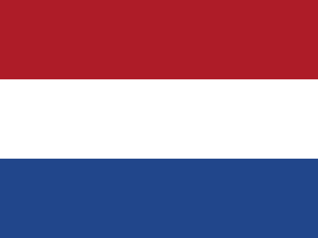

Κάτω Χώρες · Netherlands: επιβεβαιωμένες ειδήσεις και κίνδυνος
Ευρώπη · 74 γεγονότα · 2 υψηλού κινδύνου · Τελευταία κάλυψη 28 Οκτ
Με λίγα λόγια
Κάτω Χώρες · Netherlands: εμφανίζεται σε 74 γεγονότα στο ATHENA, σε 8 από τις δέκα ενότητες. 2 με υψηλό κίνδυνο (6/10 ή περισσότερο)· το υψηλότερο είναι «At least 10 killed as 2 high-speed trains collide in Spain» με 7.5.
Ανά ενότητα
Τεχνολογία & Κυβερνοασφάλεια · 26Κοινωνία & Δίκαιο · 14Γεωπολιτική · 13Επιχειρήσεις · 9Οικονομία & Αγορές · 5Ενέργεια & Περιβάλλον · 4Εμπόριο & Βιομηχανία · 2Υγεία & Επιστήμη · 1
Τα σημαντικότερα γεγονότα
- At least 10 killed as 2 high-speed trains collide in SpainΚίνδυνος 7.5 · 28 Οκτ
- Flavio Bolsonaro flees Brazil for US amid investigation — reportsΚίνδυνος 1.9 · 28 Οκτ
- Meta ordered to pay New Mexico $25 billion for deceiving users about privacy on FacebookΚίνδυνος 3.5 · 22 Οκτ
- Antonelli wins US Grand Prix but must wait for titleΚίνδυνος 1.8 · 27 Οκτ
- Lula wins 4th term as Brazil's president, but Bolsonaro rejects resultsΚίνδυνος 1.7 · 28 Οκτ
- Airbnb guests no longer have to wash the dishes or strip the beds at checkoutΚίνδυνος 1.4 · 24 Οκτ
- Albania’s prime minister vows not to resign over student-led protestsΚίνδυνος 6.1 · 22 Οκτ
- Targeted by Trump, ICC wins Europe’s top human rights prizeΚίνδυνος 3.4 · 23 Οκτ
- Clocks go back this Sunday: When daylight saving time ends in GreeceΚίνδυνος 0.0 · 26 Οκτ
- Germany arrests Ukrainian man suspected of spying for RussiaΚίνδυνος 3.7 · 22 Οκτ
Παρακολουθήσεις που αφορούν: Κάτω Χώρες · Netherlands
Χώρες στα ίδια γεγονότα
Ηνωμένες Πολιτείες · United StatesΣιγκαπούρη · SingaporeΗνωμένο Βασίλειο · United KingdomΙνδία · IndiaΠακιστάν · PakistanΤουρκία · Turkey
Τοπικές ειδήσεις: Κάτω Χώρες · Netherlands
Φόρτωση…